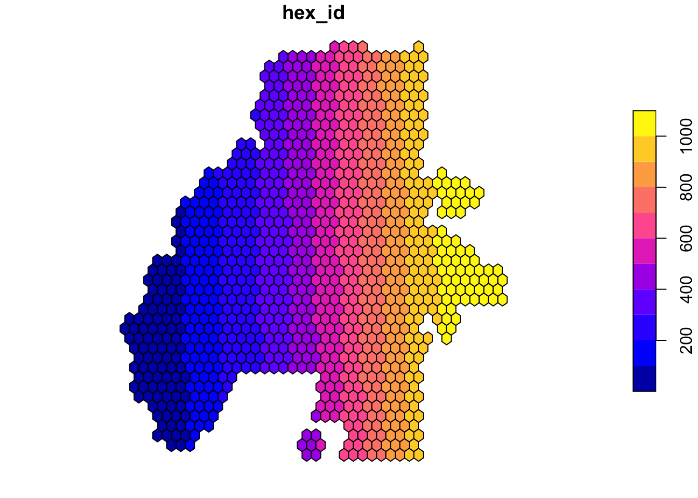
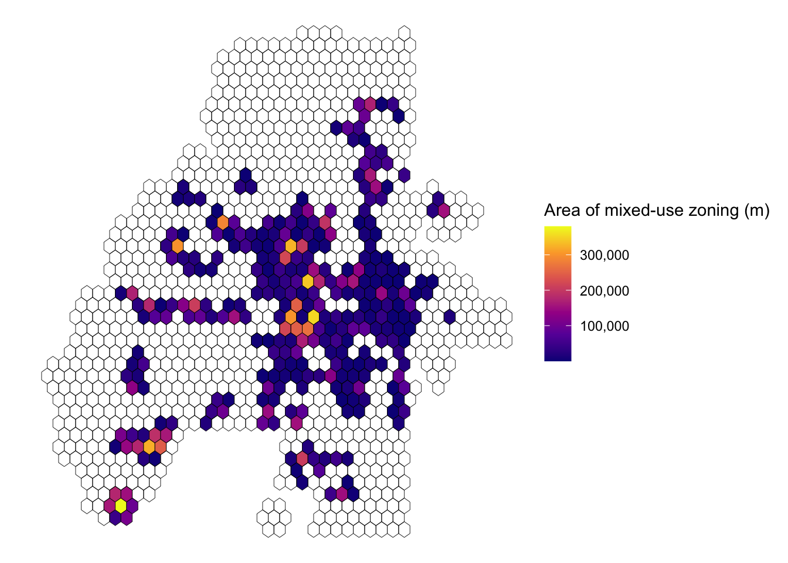

Fishnets and overlapping polygons
Today a question was asked in the geocompr discord. I wanted to share part of the solution as I think it covers 2 helpful things:
- making a fishnet grid
- calculating the area of overlap between two polygons
For this example I’m using data from the Atlanta GIS Open Data Portal. Specifically using the future land use polygons.
I’ve downloaded a local copy of the data as a geojson. But you can read it using the ArcGIS Feature Server it is hosted on.
Objective
Create a map of Atlanta, visualized as a hexagon grid, that displays the amount of planned mixed use zoning. This will be done in the following sequence:
- Creating a fishnet (hexagon) grid over the city
- Creating intersected polygons
- Calculate the area of intersected polygons
- Join back to the original fishnet grid
- visualized.
Mixed-use zoning
Start by loading sf, dplyr, and ggplot2. sf for our spatial work, dplyr for making our lives easier, and ggplot2 for a bad map later.
We read in our data (mine is local). You can use the commented out code to read directly from the ArcGIS feature server.
# read from the ArcGIS feature server
# st_read("https://services5.arcgis.com/5RxyIIJ9boPdptdo/arcgis/rest/services/Land_Use_Future/FeatureServer/0/query?outFields=*&where=1%3D1&f=geojson")
future_land_use <- read_sf("Future_Land_Use_.geojson") |>
mutate(geometry = st_make_valid(geometry))Let’s look at the different land use descriptions.
future_land_use |>
st_drop_geometry() |>
count(LANDUSEDESC, sort = TRUE) |>
reactable::reactable()To see a disgusting map with a bad legend run the following.
We can see that there are a bunch of different descriptions for different types of mixed use zoning. Let’s filter down to descriptions that have "Mixed-Use" or "Mixed Use" and visualize them.
# how much area of mixed use land use?
mixed_use <- future_land_use |>
filter(grepl("Mixed-Use|Mixed Use" , LANDUSEDESC))
ggplot() +
geom_sf(data = mixed_use, fill = "blue", color = NA) +
theme_void()
Making a fishnet grid
Having made a fishnet grid quite a few times, I’ve got this handy function. In essence we create a grid over our target geometry and we keep only those locations from the grid that intersect eachother. If we dont’, we have a square shaped grid.
It is important that you create an ID for the grid, otherwise when we intersect later you’ll not know what is being intersected.
make_fishnet <- function(geometry, n = 10, hex = TRUE) {
g <- st_make_grid(geometry, square = !hex, n = n)
g[lengths(st_intersects(g, geometry)) != 0]
}
grd <- make_fishnet(future_land_use, n = 40) |>
st_as_sf() |>
mutate(hex_id = row_number())
plot(grd)
Man, I love maps of sequential IDs.
Next, we split our mixed use polygons based on the hexagons.
# how much area in each hexagon
lu_intersects <- st_intersection(mixed_use, grd)Warning: attribute variables are assumed to be spatially constant throughout all
geometriesThen we calculate the area of each resultant shape.
The next step here is to take the split polygons, and join the data back to the hexagons. I use a right join because they don’t get enough love. And also because if you try to do a join with two sf objects they’ll scream!!.
# join it back to the grid
hex_area_overlap <- st_drop_geometry(overlap_area) |>
select(hex_id, area) |>
right_join(grd, by = "hex_id") |>
st_as_sf()
hex_area_overlapSimple feature collection with 1381 features and 2 fields
Geometry type: POLYGON
Dimension: XY
Bounding box: xmin: -84.55738 ymin: 33.64417 xmax: -84.28635 ymax: 33.88926
Geodetic CRS: WGS 84
# A tibble: 1,381 × 3
hex_id area x
<int> [m^2] <POLYGON [°]>
1 72 160485. ((-84.5182 33.65548, -84.52146 33.65737, -84.52146 33.66114, …
2 84 44538. ((-84.51493 33.64983, -84.5182 33.65171, -84.5182 33.65548, -…
3 85 176134. ((-84.51493 33.66114, -84.5182 33.66302, -84.5182 33.66679, -…
4 87 5049. ((-84.51493 33.68376, -84.5182 33.68565, -84.5182 33.68942, -…
5 97 380145. ((-84.51167 33.65548, -84.51493 33.65737, -84.51493 33.66114,…
6 100 110821. ((-84.51167 33.68942, -84.51493 33.6913, -84.51493 33.69507, …
7 106 8232. ((-84.51167 33.75729, -84.51493 33.75917, -84.51493 33.76294,…
8 110 109249. ((-84.5084 33.64983, -84.51167 33.65171, -84.51167 33.65548, …
9 111 150687. ((-84.5084 33.66114, -84.51167 33.66302, -84.51167 33.66679, …
10 113 141654. ((-84.5084 33.68376, -84.51167 33.68565, -84.51167 33.68942, …
# … with 1,371 more rows
# ℹ Use `print(n = ...)` to see more rowsNow plot it!
ggplot(hex_area_overlap, aes(fill = as.numeric(area))) +
geom_sf(color = "black", lwd = 0.15) +
theme_void() +
scale_fill_viridis_c(
option = "plasma",
na.value = NA,
labels = scales::comma
) +
labs(fill = "Area of mixed-use zoning (m)")